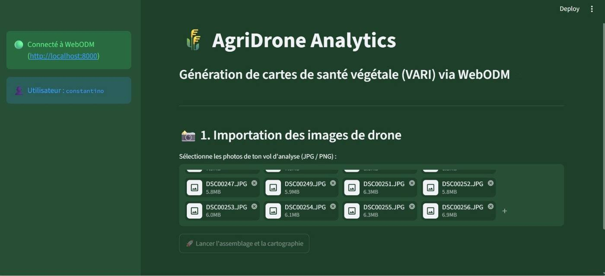

Né en quelques jours, validé devant un jury.
Voici comment Vision Agricole est né, pendant l'ÉlectroChallenge 2026.
Le concours
L'ÉlectroChallenge a pour promoteur principal Monsieur Goldfrid OBELAKOU. Le concours était ouvert à plusieurs catégories, selon l'âge.
La nôtre, la Catégorie Orange (18 à 30 ans), portait sur la cartographie agricole par drone. Cinq équipes s'y affrontaient.
Les phases préparatoires ont commencé le 2 août. La finale a débuté le 17 août.
Le récit
Tout a commencé à la mi-juillet 2026. Nous avions chacun postulé de notre côté, puis passé un test de sélection à la hauteur du défi. Les candidats retenus ont ensuite été répartis en équipes. Le Groupe 2 – Impact Connexion s'est formé autour de notre mentor, Monsieur Renaud DANVI. Avec lui, nous avons commencé à parler du projet.
Le vrai travail a démarré le 13 août, par une séance de cartographie sur un vrai terrain. Nous avons décidé de développer l'application en parallèle. Ce jour-là, nous avons travaillé jusqu'à 22 h, et la fatigue était bien réelle. Il a ensuite fallu trouver un ordinateur assez puissant pour le traitement photogrammétrique. Ce n'était pas simple : le reste de la semaine, nous rentrions très tard.
Le samedi, nous avons fait les derniers réglages de l'application et lancé la présentation PowerPoint, avec de vrais débats dans l'équipe. Le lundi soir, nous étions enfin à l'aise avec le diaporama. Le mardi, nous l'avons terminé et nous avons commencé à répéter. Ce moment a été précieux : nous avons vu les points faibles de chacun et travaillé dessus, grâce au matériel de répétition mis à notre disposition par les encadrants.
Le mercredi 19 août, nous avons pitché devant le jury. Nous n'y croyions pas vraiment : certaines propositions des quatre autres équipes de la catégorie nous avaient impressionnés. Mais nous avions choisi d'être très réalistes, de croire à notre projet et de nous donner à fond.
Nous avons remporté le défi. Jaime a en plus reçu le titre de meilleur participant de la catégorie.
La frise du défi
- Mi-juillet
Candidatures individuelles, puis test de sélection. Constitution des équipes et premiers échanges avec le mentor.
- 2 août
Début des phases préparatoires.
- 13 août
Première cartographie sur un terrain et début du développement de l'application. Séance jusqu'à 22 h.
- Même semaine
Recherche d'un ordinateur adapté au traitement photogrammétrique.
- Samedi
Derniers réglages de l'application. Début du PowerPoint.
- Lundi 17 août
Début de la finale. Le soir, le diaporama prend forme.
- Mardi
Fin du PowerPoint et premières répétitions.
- Mercredi 19 août
Pitch devant le jury et victoire en Catégorie Orange. Jaime, meilleur participant de la catégorie.
- Depuis
Version 1.1.0 de Vision Agricole et projets en cours avec l'application.
D'où l'on vient
Avant Vision Agricole, il y a eu AgriDrone Analytics : la version 0.0.0, réalisée par Constantino avec Streamlit et WebODM.

Et maintenant
Nous avons gardé le contact. Nous poursuivons l'aventure : l'application évolue, et nous participons déjà à des projets avec elle.
Ce site a été créé pour la faire connaître et la mettre à la disposition de ceux qui en ont besoin.
À COMPLÉTER Ce qui manque encore
Autres encadrants et organisateurs à remercier, anecdotes, projets actuels que l'on peut citer publiquement.